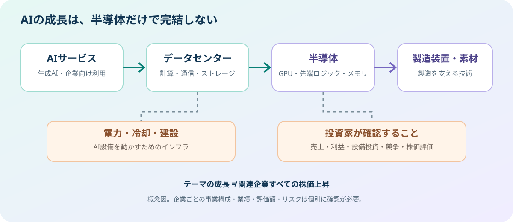

AI・半導体投資を深掘り成長領域・関連企業・リスクの見方
AIの普及は、AIサービスを提供する企業だけでなく、計算に必要な半導体、メモリ、製造装置、データセンター、電力・冷却設備にも需要を生みます。ただし、産業が成長することと、関連企業の株価が上がることは同じではありません。投資では「需要があるか」に加え、「利益として残るか」「その期待が株価にどこまで織り込まれているか」を確認する必要があります。

1. なぜAI・半導体が注目されているのか
生成AIやAIエージェントの利用が広がると、モデルの学習だけでなく、利用者の質問に答える「推論」の計算も必要になります。計算量が増えると、GPUなどの演算半導体、高速メモリ、データを運ぶネットワーク機器、電力・冷却を含むデータセンター設備への投資が拡大する可能性があります。
経済産業省は2026年6月に半導体・デジタル産業戦略を改訂し、AIモデルや計算基盤だけでなく、通信、電源、人材、セキュリティまでを含めたエコシステムの構築を重視しています。これは、AIの成長を半導体チップ単体ではなく、周辺インフラを含む産業全体で見る必要があることを示しています。
経済産業省が2026年6月に公開した資料では、WSTSの2026年春季予測として、世界半導体市場が1兆5,110億ドル（前年比約90％増）に達する見通しが紹介されています。その後、WSTSは2026年上期の実績を反映した試算も公表し、春季予測と同じ前提で計算した2026年の市場規模を約1兆6,550億ドルとしています。WSTSは、これは新しいシナリオによる予測ではないと説明しています。市場予測を読む際は、数値だけでなく公表日、実績値と予測値の区別、計算の前提も確認しましょう。
2. どの領域に需要が広がる？
| 領域 | 役割・需要の背景 | 確認したい指標・論点 |
|---|---|---|
| GPU・AIアクセラレーター | AIの学習・推論に必要な計算を処理する。 | 売上成長、粗利益率、顧客集中、競合製品、供給能力。 |
| 先端ロジック半導体の製造 | 高性能な演算チップを製造する。微細化や歩留まりが重要。 | 稼働率、設備投資、歩留まり、製造コスト、顧客構成。 |
| 高帯域メモリなどのメモリ | 大量のデータを高速に供給し、演算処理を支える。 | 製品構成、供給量、価格、設備投資、需給の変化。 |
| 製造装置・材料・検査 | 半導体の製造工程、品質管理、先端パッケージングを支える。 | 受注・受注残、顧客の投資計画、地域別売上、輸出規制。 |
| ネットワーク・光通信 | データセンター内外で大量のデータを転送する。 | 帯域需要、製品採用、競争、価格低下の速さ。 |
| データセンター・電力・冷却 | AI設備を設置し、電力供給と熱処理を行う。 | 電力確保、建設期間、稼働率、資金調達、減価償却費。 |
「AI関連」という言葉だけでは、売上のどの程度がAI由来なのか分かりません。企業の決算説明資料や有価証券報告書で、AI関連の売上比率、設備投資、顧客構成、利益率を確認することが大切です。
3. 企業の決算で何を見るべきか
売上の伸びだけでなく、利益も確認する
売上高が急増していても、研究開発費や設備投資、製造コストが大きければ、利益やキャッシュフローが期待ほど伸びないことがあります。売上高、営業利益率、営業キャッシュフロー、設備投資額を数四半期から数年の流れで確認しましょう。
設備投資が将来の負担にならないか
半導体工場やデータセンターは建設・導入に大きな資金が必要です。需要を見込んで投資を増やしても、供給が需要を上回れば価格や稼働率が低下する可能性があります。設備投資の増加だけを成長の証拠とせず、投資回収の見通しや減価償却負担も見ます。
顧客集中と競争環境を調べる
特定の大手顧客への依存度が高い企業は、その顧客の投資計画が変わると業績に大きな影響を受けることがあります。競合の技術進歩、内製チップへの切り替え、輸出規制、供給制約なども確認対象です。
4. 良い企業でも、株価が割高なことはある
株価には、現在の業績だけでなく将来の成長期待も織り込まれます。市場が高い成長を先回りして評価している場合、業績が伸びていても、期待に届かなければ株価が下がることがあります。
- PER：利益に対して株価がどの程度評価されているか。利益が景気循環で大きく変わる企業では、単年度のPERだけで判断しない。
- 売上高・利益率の推移：成長が継続しているか、採算性が改善しているか。
- キャッシュフロー：会計上の利益だけでなく、現金を生み出す力があるか。
- 市場の期待：会社計画や市場予想に対し、どの程度の成長が株価に織り込まれていそうか。
PERなどの指標は業種や成長段階によって意味が変わります。同じ指標を異なる業態の企業に機械的に当てはめず、同業他社や過去の水準と比較するのが基本です。
5. 主なリスクと、反対側のシナリオ
- 設備投資の減速：大手クラウド企業などが投資計画を縮小・延期すると、半導体や周辺設備の需要見通しが変わる可能性があります。
- 需給の反転：供給能力の拡大が需要を上回ると、製品価格や利益率が低下することがあります。
- 技術・競争の変化：新しい設計、代替技術、顧客による内製化が既存企業の優位性を弱める場合があります。
- 地政学・規制：輸出規制、関税、製造拠点の集中、台湾海峡などの地政学的リスクが供給網や業績に影響し得ます。
- 電力・冷却・建設制約：電力確保や施設建設の遅れが、データセンターの稼働開始を遅らせる可能性があります。
- 高い株価評価：期待が株価に過度に織り込まれている場合、業績が伸びても株価が下がることがあります。
- 為替・金利：海外売上比率や資金調達の大きい企業では、為替や金利の変化が業績評価に影響します。
AI需要が長期的に伸びるシナリオだけでなく、投資回収が遅れる、設備投資が一時的に減る、供給が過剰になるシナリオも考えることで、判断の偏りを減らせます。
6. 日本企業を見るときの視点
日本の半導体関連企業を調べる場合は、「AI向け」と紹介されているかだけでなく、事業のどこで価値を提供しているかを確認します。製造装置、検査・計測、材料、部品、電力関連など、サプライチェーンの異なる位置に企業があります。AI需要の恩恵が売上・利益にどの程度つながるかは企業ごとに異なります。
企業の公式IRでは、事業別売上、地域別売上、受注・受注残、設備投資、研究開発費、リスク要因を確認しましょう。国の支援策や大型投資計画は産業政策を理解する材料になりますが、支援対象であることだけを理由に、企業の利益や株価上昇を期待するのは適切ではありません。
7. 情報を追うための公式資料
- 経済産業省：第16回 半導体・デジタル産業戦略検討会議（2026年6月23日） — 2026年改訂の戦略と会議資料。
- 経済産業省：AI・半導体産業基盤強化フレーム — 国内の支援枠組みと関連政策。
- NVIDIA：決算・財務資料 — データセンター事業などの売上と会社発表。
- WSTS：2026年第2四半期の市場実績と年間市場規模の試算 — 上期実績を反映した試算と、その前提についての説明。
- WSTS：世界半導体市場統計 — 半導体市場予測・統計。
- 日本取引所グループ：上場会社情報 — 上場企業の開示情報を探す入口。